现在我们全面了解一下C编译器做语法解析之前的预处理步骤。
1．把第2.2节提到过的三连符替换成相应的单字符。
2．把用\斜线续行的多行代码接成一行。例如：
经过这个预处理步骤之后接成一行：
这种续行的写法要求\斜线后面紧跟换行⑬，中间不能有其他字符（有空格或Tab也不行）。
3．把每个注释（不管是单行注释还是多行注释）替换成一个空格。
4．经过以上两步之后去掉了一些换行，有的换行在续行过程中去掉了，有的换行在多行注释之中，也随着注释一起去掉了，剩下的代码行称为逻辑代码行。然后预处理器把每个逻辑代码行划分成Token和空白字符（在第2.6节讲过C语言规定的空白字符包括空格、\t、\v、\r、\n、\f），这时的Token称为预处理Token，包括标识符、关键字、整数常量、浮点数常量、字符常量、字符串字面值、运算符和其他标点符号，在划分Token时要遵循第6.3节讲过的最长匹配原则。继续分析上面的例子，在处理完续行之后两个源代码行被接成一个逻辑代码行，然后这个逻辑代码行被划分成Token和空白字符：#，define，空格，STR，空格，"hello,␣"，Tab，Tab，"world"，换行。
5．在Token中识别出宏定义和预处理指示，如果遇到宏定义则做宏展开，遇到预处理指示则做相应的预处理动作。如果遇到#include预处理指示，则把相应的源文件包含进来，并对该源文件做以上1～5步预处理。
我们早在第8.2节就引入了预处理指示这个概念，现在给出它的严格定义。一条预处理指示由一个逻辑代码行组成，第一个预处理Token是#号，后面跟若干个预处理Token，在逻辑代码行的开头、结尾以及各预处理Token之间可以出现任意多个空格和Tab，但不允许出现其他空白字符（除预处理指示之外的其他逻辑代码行对空白字符没有此限制）。
6．找出字符常量或字符串字面值中的转义序列，用相应的字节来替换它，比如把\n替换成字节0x0a。
7．把相邻的字符串字面值连接起来。继续上面的例子，如果代码中有：
经过第4步预处理之后划分成以下Token：printf，(，换行，Tab，STR，)，;，换行。经过第5步宏展开后变成以下Token：printf，(，换行，Tab，"hello, "，Tab，Tab，"world"，)，;，换行。然后把相邻的字符串连接起来，变成以下Token：printf，(，换行，Tab，"hello, world"，)，;，换行。
8．经过以上处理之后，把空白字符丢掉，把Token交给C编译器做语法解析，这时就不再是预处理Token，而称为C Token了。继续上面的例子，最后交给C编译器做语法解析的Token是：printf，(，"hello, world"，)，;。注意，把一个预处理指示写成多行要用\斜线续行，因为根据定义，一条预处理指示只能由一个逻辑代码行组成，而把C代码写成多行则不必用\斜线续行，因为换行在C代码中只不过是一种空白字符，在做语法解析时所有空白字符都已经丢掉了。
较大的项目都会用大量的宏定义来组织代码，你可以看看/usr/include下面的头文件中用了多少个宏定义。看起来宏展开只是做个替换而已，其实里面有比较复杂的规则，C语言有很多复杂但不常用的语法规则本书并不深入讲解，但有关宏展开的语法规则很重要也很常用，本节将会做全面详细的解释。
20.2.1 函数式宏定义
以前我们用过的#define N 20或#define STR "hello, world"这种宏定义可以称为变量式宏定义（Object-like Macro），宏定义名可以像变量一样在代码中使用。另外一种宏定义可以像函数调用一样在代码中使用，称为函数式宏定义（Function-like Macro）。例如编辑一个文件main.c：
我们想看第二行的表达式展开成什么样，可以用gcc的-E选项或cpp命令，尽管这个C程序不合语法，但没关系，我们只做预处理而不编译，不会检查程序是否符合C语法。
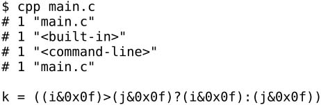
就像函数调用一样，把两个实参表达式分别替换到宏定义中形参a和b的位置。注意这种函数式宏定义和真正的函数调用之间的区别：
1．函数式宏定义的参数没有类型，预处理器只负责做形式上的替换，而不做参数类型检查，所以传参时要格外小心。
2．调用真正的函数和调用函数式宏定义的代码编译生成的指令不同。如果MAX是个真正的函数，那么它的函数体return a > b ? a : b;要编译生成指令，代码中出现的每次调用也要编译生成传参指令和call指令。而如果MAX是个函数式宏定义，这个宏定义本身倒不必编译生成指令，但是代码中出现的每次调用编译生成的指令都相当于一个函数体，而不是简单的几条传参指令和call指令。所以，使用函数式宏定义编译生成的目标文件会比较大。
3．定义这种宏要格外小心，如果上面的定义写成#define MAX(a, b) (a>b?a:b)，省略内层括号，则宏展开就成了k = (i&0x0f>j&0x0f?i&0x0f:j&0x0f)，运算的优先级就错了。同样道理，这个宏定义的外层括号也不能省，想一想为什么。
4．调用函数时先求实参表达式的值再传给形参，如果实参表达式有Side Effect，那么这些Side Effect只发生一次。例如MAX(++a, b)，如果MAX是个真正的函数，a只增加一次。但如果MAX是上面那样的宏定义，则要展开成k =((++a)>(b)?(++a):(b))，a可能增加一次也可能增加两次。
5．上面的例子说明：如果形参在宏定义中出现多次，实参表达式可能被重复求值。这种宏定义要小心使用，即使实参表达式没有Side Effect，执行结果也未必理想，因为代码的执行效率可能较低。下面举一个极端的例子，也是个很有意思的例子。
例20.1 函数式宏定义
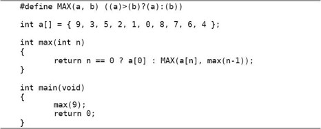
这段代码从一个数组中找出最大的数，如果MAX是个真正的函数，这个算法就是从前到后遍历一遍数组，时间复杂度是Θ(n)，而现在MAX是这样一个函数式宏定义，思考一下这个算法的时间复杂度是多少？
尽管函数式宏定义和真正的函数相比有很多缺点，但只要小心使用还是会显著提高代码的执行效率，毕竟省去了分配和释放栈帧、传参、传返回值等一系列工作，一般来说简短的、被频繁调用的函数适合用函数式宏定义来代替实现。
函数式宏定义经常写成这样的形式（取自内核代码include/linux/pm.h）：
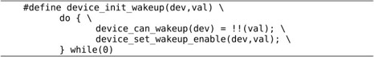
为什么要用do {...} while(0)括起来呢？不括起来会有什么问题呢？假如这样定义和使用函数式宏定义：
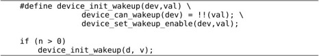
则宏展开之后函数体的第二条语句不在if条件中，结果是错的。那么，如果简单地用{...}括起来组成一个语句块不行吗？看下面的代码：
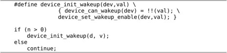
问题出在device_init_wakeup(d, v);末尾的;号：如果不允许写这个;号，看起来不像个函数调用；可如果写了这个;号，宏展开之后就有语法错误。展开之后的形式是if (...) {...}; else ...，其中{...}是一个由语句块组成的语句，而;号是一个空语句，也就是“if (控制表达式) 语句 语句 else 语句”的格式，这不符合“if (控制表达式) 语句 else 语句”的语法。用do {...} while(0)是一种比较好的解决办法，展开之后的形式是if (...) do {...} while (0); else ...，其中do {...} while (0);就是一条语句。
20.2.2 内联函数
C99引入一个新关键字inline，用于定义内联函数（Inline Function）。这种用法在内核代码中很常见，例如include/linux/rwsem.h中：
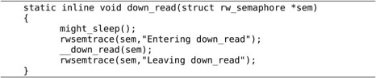
inline关键字告诉编译器，这个函数的调用要尽可能快，可以当普通的函数调用实现，也可以用宏展开的办法实现。我们做个实验，把上一节的例子改一下：
例20.2 内联函数
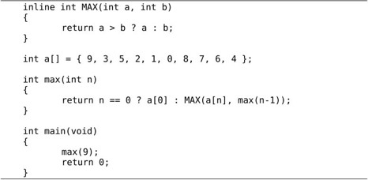
按往常的步骤编译然后反汇编：
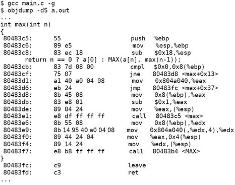
可以看到MAX是作为普通函数调用的。如果指定优化选项编译，然后反汇编：
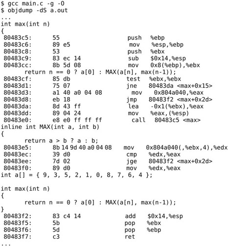
可以看到并没有生成调用MAX函数的call指令，事实上MAX函数并不独立存在，它的指令内联在max函数中，由于源代码和指令的次序无法对应，max和MAX函数的源代码也交错在一起显示。
请读者从开发和调试的角度思考一下，inline函数与函数式宏定义相比有哪些优点？
20.2.3 #、##运算符和可变参数
#和##是两个预处理运算符（注意不是C语言表达式的运算符），在函数式宏定义中，#号运算符后面应该跟一个形参（#号和形参之间可以有空格或Tab），用于创建字符串字面值，例如：
用cpp命令预处理之后是"hello␣world"，预处理器用"号把实参括起来成为一个字符串字面值，并且实参中的连续多个空白字符被替换成一个空格。再比如：
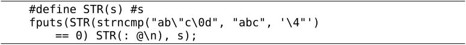
预处理之后是fputs("strncmp(\"ab\\\"c\\0d\", \"abc\", '\\4\"') == 0" ": @\n", s);，注意如果实参中包含字符常量或字符串字面值，则宏展开之后字符串的界定符"要替换成\"，字符常量或字符串字面值中的\和"字符要替换成\\和\"。
在宏定义中可以用##运算符把前后两个预处理Token连接成一个预处理Token。和#号运算符不同，##运算符不仅限于函数式宏定义，变量式宏定义也可以用。例如：
预处理之后是concat。再比如，要定义一个宏展开成两个#号，可以这样定义：

这个宏定义由三个Token组成：#、##和#。中间的##是运算符，宏展开时前后两个#号被这个运算符连接在一起。注意中间的两个空格是不可少的，如果写成####，根据最长匹配原则会被划分成##和##两个Token，而根据定义##运算符用于连接前后两个预处理Token，不能出现在宏定义的开头或末尾，所以会报错。
我们知道printf函数带有可变参数，函数式宏定义也可以带可变参数，同样是在参数列表中用...表示可变参数。例如：
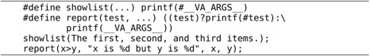
预处理之后变成：
宏定义中可变参数的部分用__VA_ARGS__表示，在宏展开时和...对应的几个实参可以看成一个实参来替换掉__VA_ARGS__。
调用函数式宏定义允许传空参数，这一点和函数调用不同，我们通过下面几个例子理解空参数的用法。
预处理之后变成foo。FOO在定义时不带参数，在调用时也不允许传参数给它。
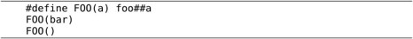
预处理之后变成：
FOO在定义时带一个参数，在调用时必须传一个参数给它，如果不传参数则表示传了一个空参数。
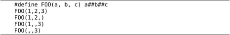
预处理之后变成：
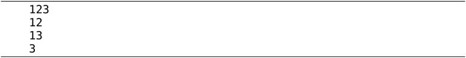
FOO在定义时带三个参数，在调用时也必须传三个参数给它，空参数的位置可以空着，但必须给足三个参数，用两个逗号隔开，FOO(1,2)这样的调用是错误的。
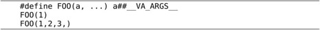
预处理之后变成：
FOO(1)这个调用相当于可变参数部分传了一个空参数，FOO(1,2,3,)这个调用相当于可变参数部分传了三个参数，第三个是空参数。
gcc有一种扩展语法，如果##运算符用在__VA_ARGS__前面，除了起连接Token的作用之外还有一种特殊用法，例如内核代码net/netfilter/nf_conntrack_proto_sctp.c中的：
内核函数printk类似于printf，也带有格式化字符串和可变参数，由于内核不能调用libc的库函数，所以另外实现了这样一个打印函数。这个函数式宏定义可以这样调用：DEBUGP("info no. %d", 1)。也可以这样调用：DEBUGP("info")。后者相当于可变参数部分传了一个空参数，但展开之后并不是printk("info",)，而是printk("info")，当__VA_ARGS__是空参数时，##运算符把它前面的逗号“吃”掉了。
20.2.4 #undef预处理指示
如果在一个编译单元中重复定义一个宏，C语言规定这些重复的宏定义必须一模一样。例如这样的重复定义是允许的：
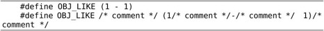
在定义的前后多些空白或少些空白没有关系（这里的空白包括空格、Tab、注释，因为前一步预处理要把注释替换成空格），在定义中间连续多个空白等价于一个空白，但在定义中间有空白和没有空白被认为是不同的，所以这样的重复定义是不允许的：
如果需要重新定义一个宏，和原来的定义不同，可以先用#undef取消原来的定义，再重新定义，例如：
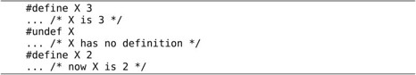
#undef的语法比较宽松。如果前面没有#define X 3，后面用#undef X取消X的定义也不算错，当然这么写也不起任何作用。如果前面定义了#define X 3，后面用#undef X取消X的定义之后，再用#undef X取消一遍也不算错。总之，重复定义一个宏必须定义得一模一样才算对，否则算错，而重复取消一个宏的定义不算错。
20.2.5 宏展开的步骤
以上列举的宏展开的例子都是最简单的，有些宏展开的过程需要做多次替换，例如：
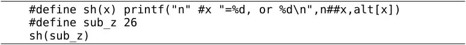
sh(sub_z)要用sh(x)这个宏定义来展开，形参x对应的实参是sub_z，替换过程如下：
1．#x要替换成"sub_z"。
2．n##x要替换成nsub_z。
3．除了带#和##运算符的参数之外，其他参数在替换之前要对实参本身做充分展开，所以应该先把sub_z展开成26再替换到alt[x]中x的位置。
4．现在展开成了printf("n" "sub_z" "=%d, or %d\n",nsub_z,alt[26])，所有参数都替换完了，这时编译器会再扫描一遍，再找出可以展开的宏定义来展开，假设nsub_z或alt是变量式宏定义，这时会进一步展开。
再举一个例子：
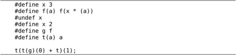
展开的步骤是：
1．先把g展开成f再替换到#define t(a) a中，得到t(f(0) + t)(1);。
2．根据#define f(a) f(x * (a))，得到t(f(x * (0)) + t)(1);。
3．把x替换成2，得到t(f(2 * (0)) + t)(1);。注意，一开始定义x为3，但是后来用#undef x取消了x的定义，又重新定义x为2。当预处理器处理到t(t(g)(0) + t)(1);这一行代码时x已经定义成2了，所以用2来替换。还要注意一点，现在得到的t(f(2 * (0)) + t)(1);中仍然有f，但不能再次根据#define f(a) f(x * (a))展开了，f(2 * (0))就是由展开f(0)得到的，展开的结果中再出现f(...)就不展开了，这样规定可以避免无穷展开（类似于无穷递归），因此我们可以放心地使用递归定义，例如#define a a[0]，#define a a.member等。
4．根据#define t(a) a最终展开成f(2 * (0)) + t(1);。这时不能再展开t(1)了，因为这里的t就是由展开t(f(2 * (0)) + t)得到的，展开的结果中再出现t(...)就不展开了。
我们在第19.2.2节中见过Header Guard的写法：
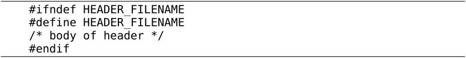
除了这种用法之外，条件预处理指示也常用于源代码的配置管理，例如：
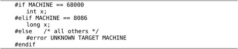
假设这段程序是为多种平台编写的，在68000平台上需要定义x为int型，在8086平台上需要定义x为long型，对其他平台暂不提供支持，就可以用条件预处理指示来写。如果在预处理这段代码之前，MACHINE被定义为68000，则包含int x;这行代码；否则如果MACHINE被定义为8086，则包含long x;这行代码；其他情况下（MACHINE没有定义，或者定义为其他值）包含#error UNKNOWN TARGET MACHINE这行代码，编译器遇到#error预处理指示就报错退出，错误信息就是UNKNOWN TARGET MACHINE。
如果要为8086平台编译这段代码，有几种可选的办法：
1．手动编辑代码，在前面添一行#define MACHINE 8086。这样做的缺点是难以管理，如果这个项目中有很多源文件都需要定义MACHINE，每次要为8086平台编译就得把这些定义全部改成8086，每次要为68000平台编译就得把这些定义全部改成68000。
2．在所有需要配置的源文件开头包含一个头文件，在头文件中定义#define MACHINE 8086，这样只需要改一个头文件就可以影响所有包含它的源文件。通常这个头文件由配置工具生成，比如在Linux内核源代码的根目录下运行make menuconfig命令可以出来一个配置菜单（make命令在下一章详细介绍），在其中配置的选项会自动转换成内核源代码目录下include/linux/autoconf.h文件中的宏定义。
举一个具体的例子，在内核配置菜单中用回车键和方向键进入Device Drivers ---> Network device support，然后用空格键选中Network device support（菜单项左边的[ ]括号内会出现一个*号），然后保存退出，在内核源代码的根目录下会生成一个名为.config的隐藏文件，其内容类似于：
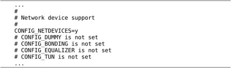
然后在内核源代码的根目录下运行make命令编译内核，这时会根据.config文件生成头文件include/linux/autoconf.h，其内容类似于：
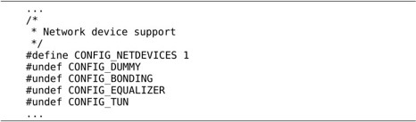
在内核配置菜单里选中的项会变成#define代码，没选中的项会变成#undef代码。#undef可以确保取消某个宏的定义，比如#undef CONFIG_DUMMY，如果该编译单元的前面定义过CONFIG_DUMMY就取消它的定义，如果前面没定义过CONFIG_DUMMY就什么都不做。
include/linux/autoconf.h被另一个头文件include/linux/config.h所包含，通常内核代码包含后一个头文件，例如net/core/sock.c：
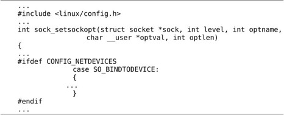
再比如drivers/isdn/i4l/isdn_common.c：
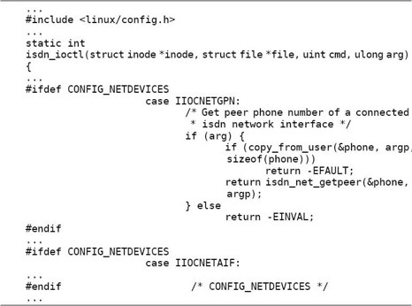
在内核配置菜单中所做的配置通过条件预处理影响到源代码，从而决定了哪些代码编译到内核中，哪些代码不编译到内核中。#ifdef或#if可以嵌套使用，但预处理指示通常都顶头写不缩进，为了区分嵌套的层次，可以像上面代码中最后一行那样，在#endif处用注释写清楚它结束的是哪个#if或#ifdef。
3．要定义一个宏不一定非得在代码中用#define定义，早在第11.6节我们就见过用gcc的-D选项定义一个宏NDEBUG。对于上面的例子，我们需要给MACHINE定义一个值，可以写成这样的命令：gcc -c -DMACHINE=8086 main.c。这种方法需要给每个编译命令都加上适当的选项，和第2种方法相比似乎也很麻烦，第2种方法在头文件中只写一次宏定义就可以在很多源文件中生效，第3种方法能不能做到“只写一次到处生效”呢？等下一章学习了Makefile就有办法了。
最后通过一个例子看看预处理器如何求值#if后面的表达式，这个表达式必须是常量表达式。
1．首先看预处理运算符defined，defined运算符一般用作表达式中的一部分，如果单独使用，#if defined x相当于#ifdef x，而#if !defined x相当于#ifndef x。在这个例子中，如果x这个宏有定义，则把defined x替换成1，否则替换成0，因此变成#if 0 || y || VERSION < 3。
2．把有定义的宏展开，变成#if 0 || y || 2 < 3。
3．把没有定义的宏替换成0，变成#if 0 || 0 || 2 < 3。注意，即使前面定义了一个变量名是y，在这一步也还是替换成0，#if表达式在预处理时求值，预处理器不知道变量名，甚至也不知道枚举常量，#if表达式中包含的标识符只能是宏定义。
4．把得到的表达式0 || 0 || 2 < 3像C表达式一样求值，求值的结果是#if 1，因此条件成立。
我们在开发调试中经常需要临时注释掉多行代码，可以用/* ... */注释：
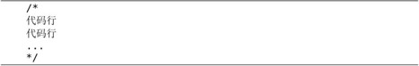
这样做有一个问题：代码行中可能已经包含/* ... */注释了，而我们讲过/* ... */注释不能嵌套使用。更好的办法是用#if 0注释掉多行代码：
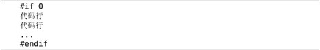
#pragma预处理指示供编译器实现一些扩展特性，C标准没有规定#pragma后面应该写什么以及起什么作用，由编译器自己规定。有的编译器用#pragma定义一些特殊功能寄存器名，有的编译器用#pragma定位链接地址，本书不做深入讨论。如果编译器在代码中碰到不认识的#pragma指示则忽略它，例如gcc的#pragma指示都是#pragma GCC ...这种形式，别的编译器看到这样的指示直接忽略。
C标准规定了几个特殊的宏，不需要定义即可使用，最常用的是__FILE__和__LINE__，__FILE__展开成当前源文件的文件名，是一个字符串，__LINE__展开成当前代码行的行号，是一个整数。这两个宏在源代码中不同的地方使用会自动展开成不同的值，显然不是用#define能定义得出来的，它们是编译器内建的特殊宏定义。在打印调试信息时打印这两个宏可以给开发者非常有用的提示，例如在第11.6节我们看到assert打印的错误信息就有__FILE__和__LINE__的值。现在我们自己实现assert，以便理解它的工作原理。这个实现出自参考文献[5]第1章：
例20.3 assert.h的一种实现
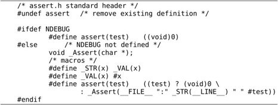
通过这个例子可以全面复习本章所讲的知识。C标准规定assert应该实现成函数式宏定义而不是一个真正的函数，并且assert(test)这个表达式应该是void类型的。首先用#undef assert确保取消前面对assert的定义，然后分两种情况：如果定义了NDEBUG，那么assert(test)直接定义成一个void类型的值，什么也不做；如果没有定义NDEBUG，则要判断测试条件test是否成立，如果条件成立就什么也不做，如果条件不成立就调用_Assert函数打印调试信息。
假设在main.c文件的第33行调用assert(is_sorted())，那么__FILE__是字符串"main.c"，__LINE__是整数33，#test是字符串"is_sorted()"。注意_STR(__LINE__)的展开过程：首先展开成_VAL(33)，然后进一步展开成字符串"33"。这样，最后_Assert调用的形式是_Assert("main.c" ":" "33" "␣" "is_sorted()")，传给_Assert函数的字符串是"main.c:33 is_sorted()"。请结合前面讲过的宏展开步骤思考一下，为什么不直接定义#define_STR(x) #x呢？
_Assert函数是我们自己定义的，在另一个源文件中：
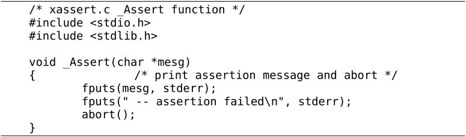
我们在这个实现中定义了一些以_线开头的标识符，例如_STR、_VAL、_Assert，这些标识符是我们的实现内部使用的，并不打算提供给用户程序使用。在第2.3节讲过，C标准库定义了很多以下划线开头的标识符留作内部使用，在/usr/include下的头文件中你可以找到很多以_线开头的标识符。
另外一个问题是：为什么我们不直接在assert宏定义中调用fputs和abort函数呢？因为C标准规定C标准库的头文件是相互独立的，用户程序只要包含assert.h就应该能使用assert宏定义，assert.h不应该依赖于别的头文件。如果在assert.h中直接调用fputs和abort，那么用户程序只包含assert.h是不够的，还必须同时包含stdio.h和stdlib.h，头文件之间就不是独立的了。fputs函数向标准错误输出打印错误信息（详见第24.2.7节），abort函数异常终止当前进程（本书不做详细介绍，请参考Man Page）。
现在测试一下我们实现的assert，把assert.h、xassert.c和测试代码main.c放在同一个目录下。
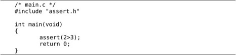
注意#include "assert.h"要用"引号而不要用角括号，以保证包含的是我们自己写的assert.h而非C标准库的头文件。然后编译运行：
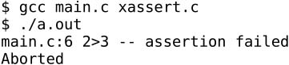
在打印调试信息时除了文件名和行号之外还可以打印出当前函数名，C99引入一个特殊标识符__func__支持这一功能。这个标识符应该是一个变量名而不是宏定义，不在预处理阶段求值，但它的作用和__FILE__、__LINE__类似，所以放在一起讲。例如：
例20.4 特殊标识符__func__
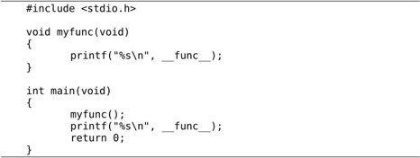
运行结果如下：
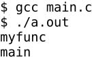